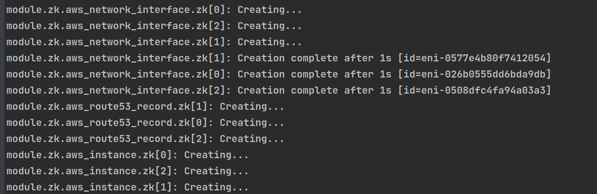

Terraform 是一个开源的基础设施自动化编排工具，使用 “基础设施即代码” 的理念来管理基础设施的变更，AWS， gcp， Azure， aliyun， ucloud 等公有云厂商都支持，还有社区提供的各种各样的 provider，已成为 “基础设施即代码” 领域的一个事实上的标准。
Terraform 有以下优点：
支持多云部署
Terraform 适用于多云方案，将类似的基础结构部署到阿里云、其他云提供商或者本地数据中心。开发人员能够使用相同的工具和相似的配置文件同时管理不同云提供商的资源。
自动化管理基础架构
Terraform 能够创建模块，可重复使用，从而减少因人为因素导致的部署和管理错误。
基础架构即代码（Infrastructure as Code）
可以用代码来管理维护资源。允许保存基础设施状态，从而使您能够跟踪对系统（基础设施即代码）中不同组件所做的更改，并与其他人共享这些配置。
降低开发成本
您通过按需创建开发和部署环境来降低成本。并且，您可以在系统更改之前进行评估。
能够使用 Terraform 在 Amazon 上创建 ShardingSphere 高可用集群，创建的集群架构图如下，后续会支持更多的云厂商。

创建的 Amazon 资源如下：
为创建 ShardingSphere Proxy 高可用集群，您需要事先准备如下资源：
根据上述准备好的资源，修改相应的 main.tf 中的参数。
main.tf 中的参数。git clone --depth=1 https://github.com/apache/shardingsphere-on-cloud.git
cd shardingsphere-on-cloud/terraform
以下提到的命令都需要在 terraform 目录中执行。
terraform init

terraform plan

terraform apply

创建完成后，会有以下输出：

您需要记录下 shardingsphere_domain 对应的值，应用可以通过连接该域名访问到 Proxy。
terraform destroy
| 名称 | 版本 |
|---|---|
| aws | 4.37.0 |
| 名称 | 源 |
|---|---|
| zk | ./zk |
| shardingsphere | ./shardingsphere |
| 名称 | 类型 | 描述 |
|---|---|---|
| shardingsphere_domain | string | 最终的对内提供的 SharidngSphere Proxy 域名，其他应用可以通过此域名连接到 Proxy |
| zk_node_domain | list(string) | ZooKeeper 服务对应的域名列表 |
内部资源列表
| 名称 | 类型 |
|---|---|
| aws_instance.zk | resource |
| aws_network_interface.zk | resource |
| aws_route53_record.zk | resource |
| aws_ami.base | data source |
| aws_availability_zones.available | data source |
| aws_route53_zone.zone | data source |
输入
| 名称 | 描述 | 类型 | 默认值 | 是否依赖 |
|---|---|---|---|---|
| cluster_size | 与可用区相同数量的集群大小 | number | n/a | yes |
| hosted_zone_name | 私有 zone 名称 | string | “shardingsphere.org” | no |
| instance_type | EC2 实例类型 | string | n/a | yes |
| key_name | SSH 密钥对 | string | n/a | yes |
| security_groups | Security Group 列表, 必须放行 2181，2888，3888 端口 | list(string) | [] | no |
| subnet_ids | VPC 中按可用区排序的子网列表 | list(string) | n/a | yes |
| tags | ZooKeeper Server 实例 tags 默认是： Name=zk-${count.idx}” | map(any) | {} | no |
| vpc_id | VPC id | string | n/a | yes |
| zk_config | ZooKeeper Server 的默认配置 | map | { "client_port”: 2181, "zk_heap”: 1024 }” |
no |
| zk_version | ZooKeeper Server 版本 | string | “3.7.1” | no |
输出
| 名称 | 描述 |
|---|---|
| zk_node_domain | ZooKeeper Server 对应的域名列表 |
| zk_node_private_ip | ZooKeeper Server 示例的内网 IP |
内部资源列表
| 名称 | 类型 |
|---|---|
| aws_autoscaling_attachment.asg_attachment_lb | resource |
| aws_autoscaling_group.ss | resource |
| aws_launch_template.ss | resource |
| aws_lb.ss | resource |
| aws_lb_listener.ss | resource |
| aws_lb_target_group.ss_tg | resource |
| aws_network_interface.ss | resource |
| aws_route53_record.ss | resource |
| aws_availability_zones.available | data source |
| aws_route53_zone.zone | data source |
| aws_vpc.vpc | data source |
输入
| 名称 | 描述 | 类型 | 默认值 | 是否依赖 |
|---|---|---|---|---|
| cluster_size | 与可用区相同数量的集群大小 | number | n/a | yes |
| hosted_zone_name | 私有 zone 名称 | string | “shardingsphere.org” | no |
| image_id | AMI 镜像 ID | string | n/a | yes |
| instance_type | EC2 实例类型 | string | n/a | yes |
| key_name | SSH 密钥对 | string | n/a | yes |
| lb_listener_port | ShardingSphere Proxy 启动端口 | string | n/a | yes |
| security_groups | Security Group 列表 | list(string) | [] | no |
| shardingsphere_version | ShardingSphere Proxy 版本 | string | n/a | yes |
| subnet_ids | VPC 中按可用区排序的子网列表 | list(string) | n/a | yes |
| vpc_id | VPC ID | string | n/a | yes |
| zk_servers | Zookeeper Servers | list(string) | n/a | yes |
输出
| 名称 | 描述 |
|---|---|
| shardingsphere_domain | ShardingSphere Proxy 集群对内提供的域名，其他应用可以通过此域名连接到 Proxy |
默认使用我们提供的 Terraform 配置创建的 ZooKeeper 和 ShardingSphere Proxy 服务可以使用 systemd 管理。
systemctl start zookeeper
systemctl stop zookeeper
systemctl restart zookeeper
systemctl start shardingsphere
systemctl stop shardingsphere
systemctl restart shardingsphere